De verandering waargenomen
A.E. Cohen als historicus en universitair bestuurder
Tentoonstelling in de Universiteitsbibliotheek te Leiden, van 28 november 2003 tot en met 4 januari 2004.
Tentoongestelde stukken
6. Oorlogsdocumentatie I
Tijdens de oorlog was de belangstelling van Cohen voor de geschiedenis van de middeleeuwen overgeslagen naar de eigen tijd. Hij nam zich voor een grote studie te wijden aan de grondslagen van de internationale politiek. De baan die hij aanvaardde hij het Rijksinstituut voor Oorlogsdocumentatie drong dit plan op de achtergrond. Bij Oorlogsdocumentatie diende hij documenten te verzamelen betreffende de Duitse bezetting, o.a. door in Duitsland op zoek te gaan naar archiefstukken en door in Nederland en Duitsland personen te ondervragen die een rol in de bezetting hadden gespeeld. Zo bezocht hij Berlijn tijdens de blokkade, en het oorlogstribunaal te Neurenberg. Ook nam hij deel aan enige internationale geschiedenisconferenties te Rome en Moskou. Op het gebied van de contemporaine geschiedenis vond er toen nog maar weinig internationale uitwisseling plaats. Na het verzamelen van documenten en getuigenissen, kwam het presenteren daarvan in nota’s en bronnenpublicaties. Cohen voelde zich bij Oorlogsdocumentatie in zijn element, maar de uitnodiging hoogleraar middeleeuwse geschiedenis in Leiden te worden, was nog aantrekkelijker.
| 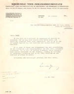 | 6.1. L. de Jong aan A.E.
Cohen, 26 oktober 1945 [AEC]
¶ In bedekte termen krijgt Cohen een baan aan het RIOD in het vooruitzicht gesteld. |
|
| 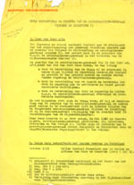 | 6.2. Nota betreffende de positie van de secretarissen-generaal tijdens de bezetting. [AEC] | |
| 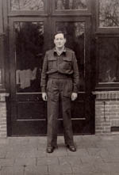 | 6.3. Cohen in het uniform van
officier civiele dienst. [AEC]
¶ In de eerste na-oorlogse jaren was Duitsland alleen toegankelijk voor geüniformeerden. |
|
| 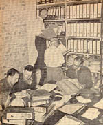 | 6.4. A.E. Cohen,
`Mijn ervaringen in Duitsland’, Nederland in oorlogstijd.
Orgaan van het Rijksinstituut voor Oorlogsdocumentatie 2 (1947)
165-167 [UBL 255 A 4]
¶ Foto van de onderzoekers van het RIOD, werkend in het Berlin Document Centre. Foto: Sem Presser. |
|
| 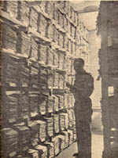 | ||
| 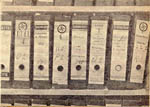 | ||
| 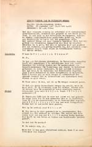 | 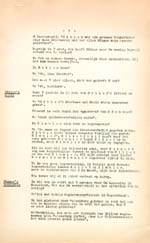 | 6.5. Verslag van een ondervraging door Cohen van Friedrich Wimmer, Dachau, 28 augustus 1947. [AEC] |
| 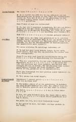 | 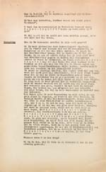 | |
| 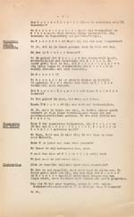 | 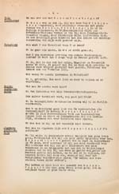 | |
| 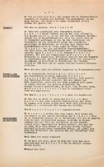 | 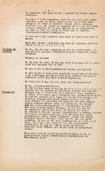 | |
| 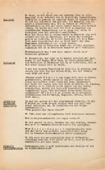 | 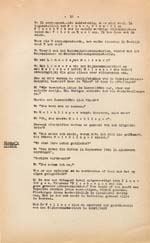 | |
| 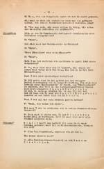 | 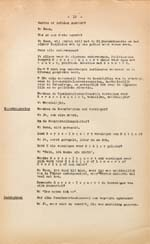 | |
| 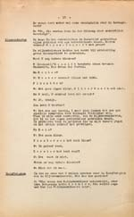 | ||
| 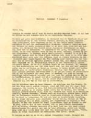 | 6.6. Eerste van een reeks brieven van Cohen aan L. de Jong, augustus 1948, vanuit het geblokkeerde Berlijn. [AEC] | |
| 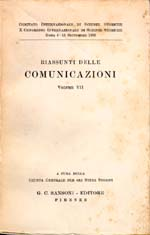 | 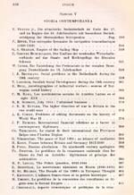 | 6.7. Resumés van de voordrachten op het
Internationaal Congres van Historici te Rome, 4-11 september 1955. [AEC]
¶ Cohen sprak er over het ontsluiten van bronnen betreffende de recente geschiedenis (zie bibliografie). |
| 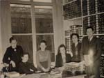 | 6.8. Cohen vormde
aanvankelijk samen met T.M. Sjenitzer-van Leening de afdeling
`voorbereiding publicaties’, later `bronnenpublicaties’ van het
RIOD. Naast hen enkele andere medewerkers van dezelfde verdieping. [AEC]
¶ T.M. Sjenitzer-van Leening was de bezorger van: Dagboek
fragmenten 1940-1945 ('s-Gravenhage : Nijhoff, 1954) |
|
| 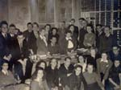 | 6.9. Groepsfoto van alle
medewerkers van het NIOD. [AEC]
¶ Zittend aan het bureau L. de Jong. Cohen staat achteraan links, voor de landkaart, met gesloten ogen. |
|
| vorige pagina | volgende pagina |